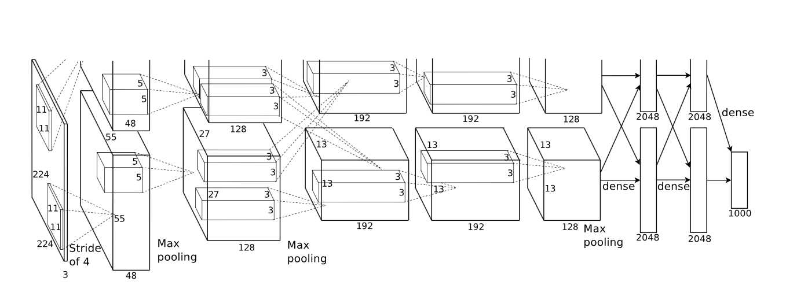
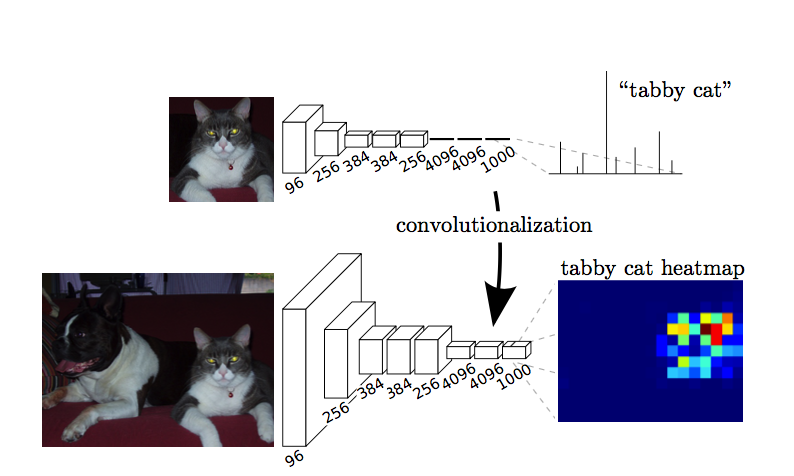
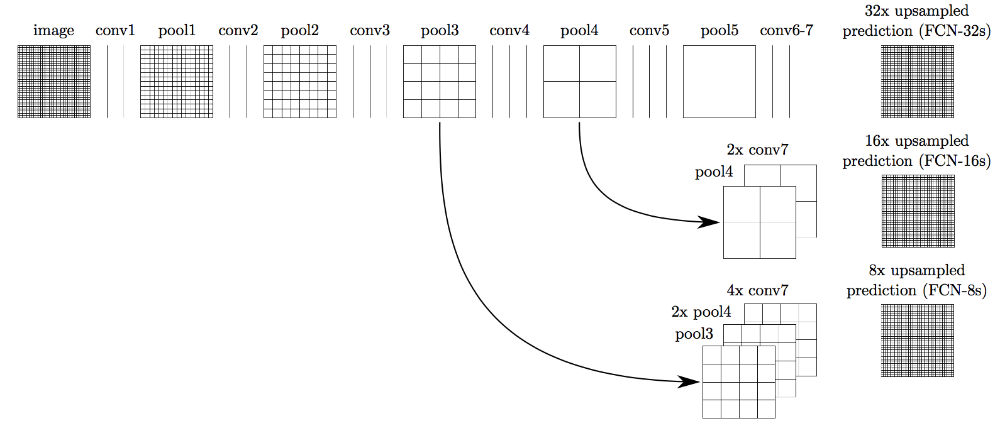
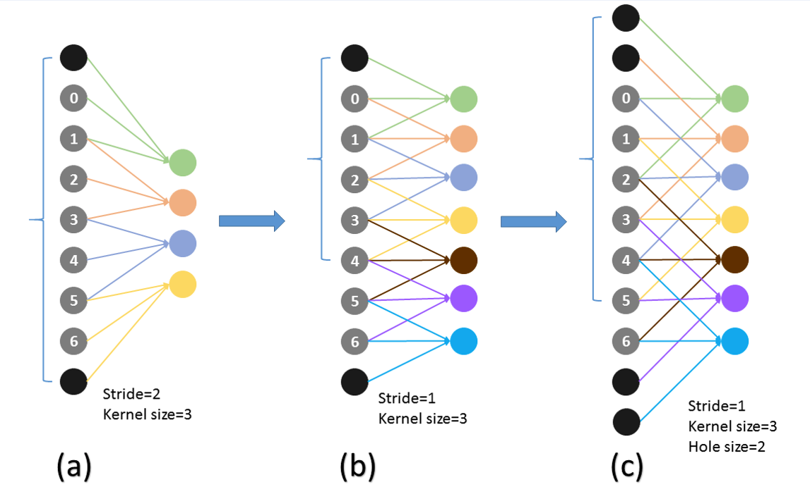
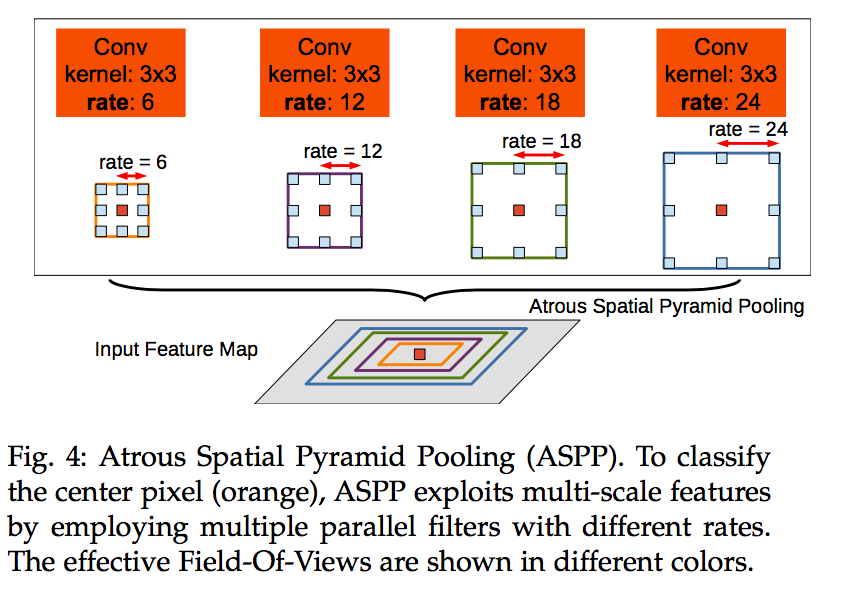
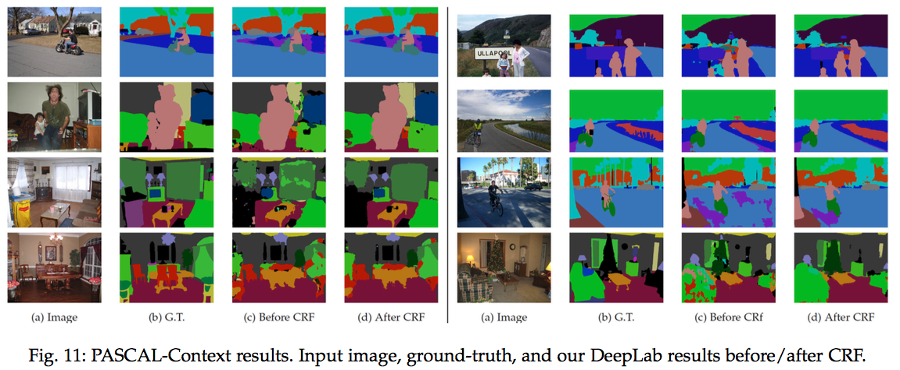
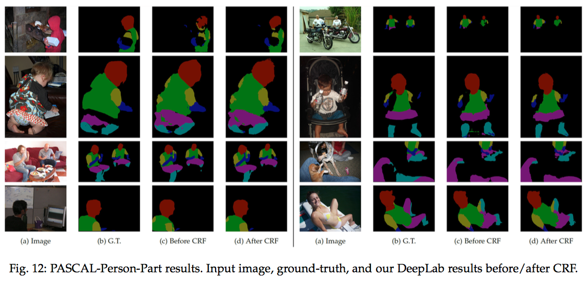
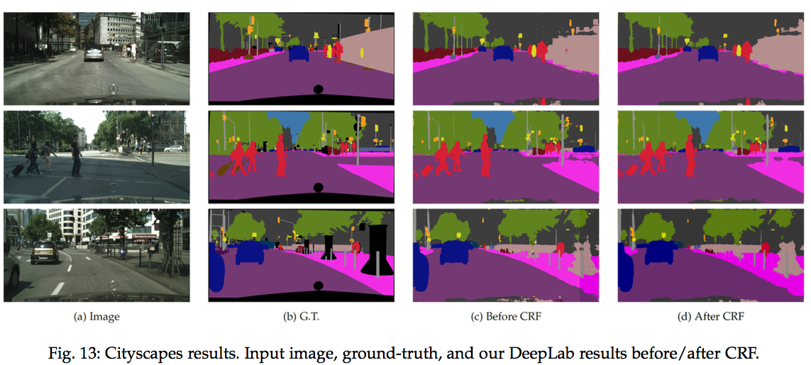

<!DOCTYPE html>
<html lang="en">

  <head>
    
      


    

    <meta charset="utf-8">
    <meta http-equiv="X-UA-Compatible" content="IE=edge">
    <meta name="viewport" content="width=device-width, initial-scale=1">

    <title>Tianhao</title>
    <meta name="description" content="随便写写，都是骗人的">

    <link rel="shortcut icon" href="/assets/images/favicon.ico">
    <link rel="stylesheet" href="/assets/css/main.css">
    <link rel="canonical" href="http://localhost:4000/">

    <!-- For Latex -->
    <script src="https://cdnjs.cloudflare.com/ajax/libs/mathjax/2.7.0/MathJax.js?config=TeX-AMS-MML_HTMLorMML" type="text/javascript"></script>

    <!-- Google Analytics -->
    <script>
        (function(i,s,o,g,r,a,m){i['GoogleAnalyticsObject']=r;i[r]=i[r]||function(){
        (i[r].q=i[r].q||[]).push(arguments)},i[r].l=1*new Date();a=s.createElement(o),
        m=s.getElementsByTagName(o)[0];a.async=1;a.src=g;m.parentNode.insertBefore(a,m)
        })(window,document,'script','https://www.google-analytics.com/analytics.js','ga');

        ga('create', 'UA-8161570-6', 'auto');
        ga('send', 'pageview');
    </script>

    <!-- For Facebook share button -->
    <div id="fb-root"></div>
    <script>
      (function(d, s, id) {
        var js, fjs = d.getElementsByTagName(s)[0];
        if (d.getElementById(id)) return;
        js = d.createElement(s); js.id = id;
        js.src = "//connect.facebook.net/en_US/sdk.js#xfbml=1&version=v2.9";
        fjs.parentNode.insertBefore(js, fjs);
      }(document, 'script', 'facebook-jssdk'));
    </script>

</head>


  <body>

    <header class="site-header" role="banner">

    <div class="wrapper">
        
        <a class="site-title" href="/">Tianhao</a>

        <nav class="site-nav">
            <a class="page-link" href="http://Wei-Tianhao.github.io" target="_blank">&#x1f349; About</a>
        </nav>

        <nav class="site-nav">
            <a class="page-link" href="/contact.html">&#x1f4ee; Contact</a>
        </nav>

    </div>

</header>


    <main class="page-content" aria-label="Content">
      <div class="wrapper">
        <div class="home">
  <h1 class="page-heading">Posts</h1>
  <ul class="post-list">
    
      <li>
        
        <span class="post-meta">
          Sep 23, 2019
          <span>
            
              
              <a class="post-tag" href="/tag/bayesian-methods"><nobr>bayesian-methods</nobr>&nbsp;</a>
            
              
              <a class="post-tag" href="/tag/machine-learning"><nobr>machine-learning</nobr>&nbsp;</a>
            
          </span>
        </span>

        <h2>
          <a class="post-link" href="/2019/09/23/gaussian-process.html">高斯过程回归科普</a>
          
            <blockquote>
  <p>高斯过程最关键的思想就是，你不想要什么变量，就对这个变量做高斯分布假设…然后就可以计算关于这个变量的边缘分布，把这个变量消掉，建立起其他变量之间的直接联系。</p>
</blockquote>


          
        </h2>
      </li>
    
      <li>
        
        <span class="post-meta">
          Sep 16, 2019
          <span>
            
              
              <a class="post-tag" href="/tag/meta-learning"><nobr>meta-learning</nobr>&nbsp;</a>
            
              
              <a class="post-tag" href="/tag/long-read"><nobr>long-read</nobr>&nbsp;</a>
            
          </span>
        </span>

        <h2>
          <a class="post-link" href="/2019/09/16/meta-learning.html">元学习: 学习如何学习</a>
          
            <blockquote>
  <p>学习如何学习的方法被称为元学习。元学习的目标是在接触到没见过的任务或者迁移到新环境中时，可以根据之前的经验和少量的样本快速学习如何应对。元学习有三种常见的实现方法：1）学习有效的距离度量方式（基于度量的方法）；2）使用带有显式或隐式记忆储存的（循环）神经网络（基于模型的方法）；3）训练以快速学习为目标的模型（基于优化的方法）</p>
</blockquote>


          
        </h2>
      </li>
    
      <li>
        
        <span class="post-meta">
          Jul 20, 2019
          <span>
            
          </span>
        </span>

        <h2>
          <a class="post-link" href="/%E7%9E%8E%E6%89%AF/2019/07/20/%E7%9E%8E%E6%89%AF.html">瞎扯</a>
          
            <h2 id="瞎扯">瞎扯</h2>

<p>测试公式
<script type="math/tex">A^x_y = F_{uck}</script></p>

<p>测试一下github.io</p>

<p></p>

          
        </h2>
      </li>
    
      <li>
        
        <span class="post-meta">
          Jul 21, 2017
          <span>
            
              
              <a class="post-tag" href="/tag/rnn"><nobr>rnn</nobr>&nbsp;</a>
            
              
              <a class="post-tag" href="/tag/tensorflow"><nobr>tensorflow</nobr>&nbsp;</a>
            
          </span>
        </span>

        <h2>
          <a class="post-link" href="/2017/07/21/predict-stock-prices-using-RNN-part-2.html">Predict Stock Prices Using RNN: Part 2</a>
          
            <blockquote>
  <p>This post is a continued tutorial for how to build a recurrent neural network using Tensorflow to predict stock market prices. Part 2 attempts to predict prices of multiple stocks using embeddings. The full working code is available in <a href="https://github.com/lilianweng/stock-rnn">github.com/lilianweng/stock-rnn</a>.</p>
</blockquote>


          
        </h2>
      </li>
    
      <li>
        
        <span class="post-meta">
          Jul 8, 2017
          <span>
            
              
              <a class="post-tag" href="/tag/rnn"><nobr>rnn</nobr>&nbsp;</a>
            
              
              <a class="post-tag" href="/tag/tensorflow"><nobr>tensorflow</nobr>&nbsp;</a>
            
          </span>
        </span>

        <h2>
          <a class="post-link" href="/2017/07/08/predict-stock-prices-using-RNN-part-1.html">Predict Stock Prices Using RNN: Part 1</a>
          
            <blockquote>
  <p>This post is a tutorial for how to build a recurrent neural network using Tensorflow to predict stock market prices. Part 1 focuses on the prediction of S&amp;P 500 index. The full working code is available in <a href="https://github.com/lilianweng/stock-rnn">github.com/lilianweng/stock-rnn</a>.</p>
</blockquote>


          
        </h2>
      </li>
    
      <li>
        
        <span class="post-meta">
          Jun 20, 2017
          <span>
            
              
              <a class="post-tag" href="/tag/review"><nobr>review</nobr>&nbsp;</a>
            
          </span>
        </span>

        <h2>
          <a class="post-link" href="/2017/06/20/an-overview-of-deep-learning.html">An Overview of Deep Learning for Curious People</a>
          
            <blockquote>
  <p>Starting earlier this year, I grew a strong curiosity of deep learning and spent some time reading about this field. To document what I’ve learned and to provide some interesting pointers to people with similar interests, I wrote this overview of deep learning models and their applications.</p>
</blockquote>


          
        </h2>
      </li>
    
      <li>
        
        <span class="post-meta">
          Jun 4, 2017
          <span>
            
          </span>
        </span>

        <h2>
          <a class="post-link" href="/%E8%AE%BA%E6%96%87/2017/06/04/OSVOS%E8%B7%9F%E8%BF%9B.html">OSVOS跟进</a>
          
            <h2 id="semantically-guided-video-object-segmentation">Semantically-Guided Video Object Segmentation</h2>

<p>这篇论文我很喜欢，更符合人类的认知过程。</p>

<p>该篇论文提出的方法是模拟人类在视频中追踪物体的情形，人们在视频追踪的时候分为两种情形，一种是连续的画面，那很自然的就由上一帧的物体所在点过渡过来；但是当漏了几秒没看的时候，人们是怎么识别物体的呢？这就是该篇论文的出发点，语义分析追踪。即我第一帧看到了车，在画面不能连续起来的时候我就去找“车”这个语义在图片哪里。</p>

<p>对于第一帧图片使用FCN对图片中的各种物体做出像素级预测，然后寻找与mask重合最多的预测，比如说是car。对后面的帧预测的时候，即可先对图片做语义分割，然后找语义为car的预测，在于上一帧的mask结合，做出预测。总体结构如下</p>

<p>论文还提出了一个conditional classifier layer，主要功能是视情况结合propagation的结果和semantic segmentation的结果。比如物体移动非常剧烈的时候只采用semantic segmentation，放弃propagation的mask；而又多个相同语义的物体时则要侧重于propagation的结果（具体实现以后还要再看下）。</p>

<p></p>

<p>这篇论文我觉的最符合人类的直观认识，不知道还能不能再从这方面深入挖掘一下。</p>

<h2 id="lucid-data-dreaming-for-object-tracking">Lucid Data Dreaming for Object Tracking</h2>

<p>该篇论文主要提出了一种增强数据的方法，可以只用训练集里的数据就达到较好的效果。</p>

<p>按照以下五步来</p>

<ol>
  <li>光照随机变化，变换HSV中S和V</li>
  <li>把前景抠出来，补全背景</li>
  <li>随机移动、变形前景</li>
  <li>随机模拟相机变化，平移、旋转、放缩</li>
  <li>前景背景结合</li>
</ol>

<p></p>

<p>作者用一帧生成<script type="math/tex">10^3</script>级别的训练数据，效果相同的情形下数据量仅为原来的<script type="math/tex">\frac1{100}</script>到<script type="math/tex">\frac1{20}</script>。这种数据生成是跟网络完全独立的，可以用在以后的训练中。</p>

<p>作者训练用的模型是结合上一帧的mask与optical flow的模型，不是本文研究的重点，简要介绍了一下。</p>

<p></p>

<h2 id="learning-video-object-segmentation-from-static-images">Learning Video Object Segmentation from Static Images</h2>

<p>这篇论文提出将视频vido object segmentation看做是guided instance segmentation。本文的模型是先用静态图像预训练convnet，再由视频中的前几帧引导，生成高精确度的分割。</p>

<p></p>

<p>模型的关键在于离线和在线算法的结合，离线算法用于学习物体的特征，在线算法refine mask。大步骤跟OSVOS基本一致，但本质思想不同</p>

<h3 id="与osvos的区别">与OSVOS的区别</h3>

<ol>
  <li>
    <p>总体思路是Mask Track，而OSVOS则是Mask再识别。对于当前帧的预测，该篇论文使用当前帧帧的前几帧做引导，但OSVOS只是用了视频的第一帧，即没有propagation的过程。只用第一帧可能会导致效果随着时间下降（与第一帧差异越来越大）。</p>
  </li>
  <li>
    <ul>
      <li>第一步pre-training，同样是图像识别</li>
      <li>第二步offline training，OSVOS是使用训练集使网络学习mask的广义概念，而该篇则注重使网络学习如何propagating（根据前几帧的mask和当前帧推导出当前帧的mask）</li>
      <li>第三步online training，同样是使用test视频的一张标注来refine，而OSVOS还有轮廓的CNN预测来提高精确度。该篇的refine是通过对第一张mask进行各种变换形成许多训练数据，用这些数据训练网络，在test时用第一张标注辅助propagation（类似广义mask）</li>
      <li>Test，OSVOS只用第一张进行mask预测，该篇除了使用propagation以外也同样将第一张标注用于所有图像的mask预测</li>
    </ul>

    <p>主要区别在于第二步，第三步中OSVOS的轮廓预测是独立的模块，可以应用到该篇</p>
  </li>
</ol>

<h3 id="训练细节">训练细节</h3>

<p>使用的网络是DeepLabv2-VGG network，</p>

<p>第二步的实际训练方式是先将前一帧的mask做一些形态学变换模拟各种噪声，增大数据量，同时使用图片识别的mask进行一些形态学变换，来模拟前一帧与当前帧的差异。这样就可以使用图片识别的数据集进行训练，数据量大大提升。）</p>

<p></p>

<p>作者还提出了几种guidence的变体，有box annotation和optical flow</p>

<p>第一张的online finetuning要200次迭代，加上第一张的fintuning平均每帧的预测要12秒</p>

<h2 id="automatic-real-time-background-cut-for-portrait-videos">Automatic Real-time Background Cut for Portrait Videos</h2>

<p>这篇论文是讲怎么从视频里实时抠出人像的，主要是借鉴OSVOS来学习背景。</p>

<p>该网络先学习许多背景的采样，再跟原视频结合，达到更好的消除效果，称为global attenuation</p>

<p></p>

<p>感觉这个问题与video object segmentation差别比较大，因为人的大小基本恒定，而且背景一般是静态的。该网络对于动态背景的表现很差。</p>

<p>启发点可能有对于背景的学习是否可以更重视一些？</p>

<h2 id="deeply-supervised-salient-object-detection-with-short-connections">Deeply Supervised Salient Object Detection with Short Connections</h2>

<p>在HED中，深层的side outputs主要用于定位，浅层的side outputs主要用于表达细节，这启发了作者使用short connections在HED内部构建skip-layer，更好的结合深层与浅层的能力。下图的c和d是作者提出的模型。（以下暂称SCHED(short connected HED)，作者没给官方简称…）</p>

<p></p>

<p>这个网络的具体应用我觉得可以有以下几种途径</p>

<ol>
  <li>OSVOS跟进，用这个网络与ImageNet预训练的网络（或者合并成一个预训练过的网络）共同学习如何区分前景和后景，提升OSVOS区分mask的能力，总体步骤不变。
    <ul>
      <li>优势：mask一般是salient object，应该学习起来比较容易，而且SCHED带有轮廓学习能力，可以省略OSVOS中的轮廓CNN，提升速度，简化模型</li>
      <li>劣势：有时候mask是不起眼的物体，比如远处来的赛车，一开始很小，这种情况可能学习起来比较困难</li>
    </ul>
  </li>
  <li>Learning Video Object Segmentation from Static Images跟进，用SCHED代替optical flow，与propagation结合
    <ul>
      <li>优势，更快，轮廓更精确</li>
      <li>劣势，没有明显的理由表明会提升表现</li>
    </ul>
  </li>
</ol>


          
        </h2>
      </li>
    
      <li>
        
        <span class="post-meta">
          May 25, 2017
          <span>
            
          </span>
        </span>

        <h2>
          <a class="post-link" href="/%E8%AE%BA%E6%96%87/2017/05/25/semantic-segmentation.html">语义分割笔记</a>
          
            <h2 id="image-caption为什么需要semantic-segmentation">Image Caption为什么需要Semantic Segmentation</h2>

<p>一开始的网络只是把CNN的FC层直接输入RNN，但这个层里面的东西是难以解释的，但是RNN这么稀里糊涂的弄一弄就能描述出来图片了。这让人非常没有掌控感，于是后来Google有一篇论文就是讨论输入RNN的东西的可解释性是否对于Image caption有作用，一个很自然的想法是不仅要输入图像中的各项特征，而最好能把图像中的各个物体标注出来，将语义信息输入RNN。结果发现，输入可解释的信息大大提高了神经网络的表现。并不是稀里糊涂的一通训练就可以得到好的效果的。这篇论文非常具有启发性。一个创新之后，对这个创新中的局部进行优化，对局部之间的协作方式进行优化，对创新中说得不清晰或者不合理的部分敢于反思并探索，往往大的提升就在这些模糊的区域中了。接下来是几篇经典论文串讲，从最基础的AlexNet开始。</p>

<h2 id="imagenet-classification-with-deep-convolutional-neural-networks">ImageNet Classification with Deep Convolutional Neural Networks</h2>

<p>这篇论文开创了利用深度卷积神经网络进行图像识别的方法。也就是著名的AlexNet，结构如下图，5个卷积层，3个全连接层：</p>

<p></p>

<p>虽然AlexNet不是CNN的开创者，但他使用了许多技术使得CNN的识别能力大幅提高并已成为现在的标准配置，有</p>

<ol>
  <li>ReLU：没有饱和的问题，更快</li>
  <li>Overlapping Pooling，轻微改善，防止过拟合</li>
  <li>多GPU并行, 更快</li>
  <li>LRN，ReLU后的局部归一化，虽然ReLU对很大的X依然有效，但这样还是能改善一些</li>
  <li>减少过拟合：1）数据扩增，各种形态学变化之类的。 2）Dropout，方便好用，记得test的时乘上</li>
  <li>Weight Decay，感觉实际上就是正则项<script type="math/tex">\lambda</script></li>
</ol>

<p>接下来介绍如何用CNN作语义分割</p>

<h2 id="fully-convolutional-networks-for-semantic-segmentation">Fully Convolutional Networks for Semantic Segmentation</h2>

<p>这篇论文最早提出了全卷积网络的概念，想法其实很简单，CNN的输出是一维的向量，如果我们把最后面的FC层全都换成卷积层，就可以输出二维向量了，下图就是AlexNet卷积化后形成的全卷积网络：</p>

<p></p>

<p>而且因为FCN与CNN结构非常相似，任务也比较接近，可以利用CNN训练好的网络进行Fine tuning，节省训练时间。而且在计算卷积的时候因为receptive fields重叠的非常多，所以训练很高效（这里不是很懂。。）</p>

<p>但从图中可以看出，这样最终生成的图像是比原来小的，而语义分割需要得到与原图同样大小的图像，那怎么办呢？接着论文提出了upsampling，deconvolution（CS231n里讲这个名字被吐槽的很多，叫conv transpose之类的比较好）的技巧（本质就是插值）。Deconvolution实际上就是将卷积的正向传播和反向传播反过来。反向卷积能否学习对于表现没有明显提升，所以学习率被置零了。但deconvolution又带来了一个问题，就是分辨率的问题，很容易想象出来，好比一张小照片被放大了一样，非常模糊。为了解决这个问题，作者又提出了skip layer的方法，即将前面的卷积层与后面同样大小的反卷积层结合起来。</p>

<p></p>

<h2 id="deeplab-semantic-image-segmentation-withdeep-convolutional-nets-atrous-convolutionand-fully-connected-crfs">DeepLab: Semantic Image Segmentation withDeep Convolutional Nets, Atrous Convolution,and Fully Connected CRFs</h2>

<p>这篇论文提出了使用DCNN实现语义分割的3个主要挑战</p>

<ol>
  <li>DCNN降低了特征的分辨率，而且为了保证图片不太小加入了100的padding，引入了噪声</li>
  <li>图片上存在着大小不一的物体</li>
  <li>图片特征在DCNN中的空间变化不变性导致的细节丢失（局部精确性与分类准确性的矛盾，上一篇论文使用了skip layer来处理这个问题）</li>
</ol>

<h4 id="第一个问题">第一个问题</h4>

<p>作者首先更改了最后两层池化层，把pooling的stride改为1，同时加上1个padding，这样池化后像素的个数就不再改变了。</p>

<p></p>

<p>上图的a是原来的池化，b是更改后的池化，c是为了增加感受野带洞的卷积atrous conv。（<strong>==这里池化和卷积分的不太清楚，之后看下代码==</strong>）为什么要带洞呢，是因为b图的感受野是比a要小的，可以看出b图中池化后的连续三个像素对应着池化前的5个，而a图则对应着7个。这会导致全局性的削弱。因此作者收到atrous算法的启发，加上了洞。在扩大分辨率的同时保持了感受野。更改后输出的预测图的大小是原来的4倍，下图直观展示了效果，下图是先将一张图片downsample为1/2，然后分别使用竖向高斯导数卷积核和atrous核，最后再upsampling，高斯核只能得到原图的1/4坐标的预测，而atrous核能得到全部像素的预测</p>

<p>atrous具体的实现方法有两种，一种是往卷积核里插0，一种是把图片subsample，然后再标准卷积</p>

<p>有一点要说一下，为什么不把池化层直接去掉呢？主要是因为去掉以后网络结构改变，没法使用训练好的网络fine tuning。因为图像识别的数据量比较大，网络训练的比较成熟，所以一般都希望能够借助其训练好的模型。</p>

<h4 id="第二个问题">第二个问题</h4>

<p>不同尺寸目标的问题。一个好的解决方案是对于不同尺寸分别做DCNN，但这样太慢了，所以作者用了ASPP，并行的使用多个rate不同的atrous conv，这些卷积核共享参数，所以训练快了很多。如下图所示。</p>

<p></p>

<h4 id="第三个问题">第三个问题</h4>

<p>局部精确性与分类表现的矛盾问题。作者说有两种解决方法，一种就是利用多层网络中的信息来增强细节，如skip layers；另一种就是使用一些super-pixel（把像素划分成区域）表示，直接去底层获取信息，比如CRF</p>

<p>CRF的一个101http://blog.echen.me/2012/01/03/introduction-to-conditional-random-fields/（下面写了个3分钟版本的CRF感想，这个以后还有再系统学一下）</p>

<p>简单概括来说，CRF就是对于一个给定的全局观测，许多设定的特征函数，计算一个标签序列在这些特征函数下的得分，然后加权求和求得这个标签序列的得分。再将所有标签序列的得分Softmax归一化，作为该序列的概率。</p>

<h4 id="scorels--sigma_j1msigma_i1nlambda_jf_js-i-l_i-l_i-1"><script type="math/tex">score(l|s) = \Sigma_{j=1}^{m}\Sigma_{i=1}^n\lambda_jf_j(s, i, l_i, l_{i-1})</script></h4>

<h4 id="pls--fracexpscorelssigma_l-expscorels"><script type="math/tex">p(l|s) = \frac{exp[score(l|s)]}{\Sigma_{l'} exp[score(l'|s)]}</script></h4>

<p><script type="math/tex">f_j</script> 是特征函数，具体定义由问题决定（比如在词义分析中，可以定义为形容词后面是名词则<script type="math/tex">f</script> 为1，否则为0），<script type="math/tex">l</script> 是一个标签序列，这里的公式针对的是一维的情况，在图像标注中应该改成二维的，<script type="math/tex">l_{i-1}</script> 在二维中对应着<script type="math/tex">i</script> 的邻居节点的标签</p>

<p>要做的事情就是学习<script type="math/tex">\lambda_j</script> 的值，这跟Logistics回归非常像，实际上这就是个时间序列版的logistics回归。一般目标是用最大似然估计来衡量学习。</p>

<p>每一个HMM（隐马尔科夫模型）都等价于一个CRF，就是说CRF比HMM更强。对HMM模型取对数之后吧概率对数看做权值，即化为CRF。这是因为CRF的特征函数具有更强的自由性，可以根据全局来定义特征函数，而HMM自身带有局部性，限制了其相应的特征函数。而且CRF可以使用任意权重，而HMM只能使用对数概率作为权重。</p>

<p>在这篇论文中，优化的目标是使下面这个函数最小</p>

<h4 id="ex--sigma_itheta_ix_isigma_ijtheta_ijx_i-x_j"><script type="math/tex">E(x) = \Sigma_i\theta_i(x_i)+\Sigma_{ij}\theta_{ij}(x_i, x_j)</script></h4>

<p><script type="math/tex">x_i</script> 是第<script type="math/tex">i</script> 个像素的标签，<script type="math/tex">\theta_i(x_i) = -log P(x_i)</script> ，<script type="math/tex">P(x_i)</script> 是第i个像素贴上<script type="math/tex">x_i</script> 这个标签的概率（由DCNN算出来的），<script type="math/tex">\theta_{ij}(x_i, x_j)</script> 是像素<script type="math/tex">i</script> 像素<script type="math/tex">j</script> 之间关系的度量</p>

<h4 id="theta_ijx_i-x_j--mux_i-x_jw_1-exp-fracp_i-p_j22sigma_alpha2-fraci_i-i_j22sigma_beta2-----------------------------------w_2-exp-fracp_i-p_j22sigma_gamma2"><script type="math/tex">\theta_{ij}(x_i, x_j) = \mu(x_i, x_j)[w_1\ exp(-\frac{||p_i-p_j||^2}{2\sigma_{\alpha}^2}-\frac{||I_i-I_j||^2}{2\sigma_{\beta}^2}) \\\ \ \ \ \ \ \ \ \ \ \ \ \ \ \ \ \ \ \ \ \ \ \ \ \ \ \ \ \ \ \ \ \ + w_2\ exp(-\frac{||p_i-p_j||^2}{2\sigma_{\gamma}^2})]</script></h4>

<p><script type="math/tex">\mu</script> 在<script type="math/tex">x_i, x_j</script> 相等的时候是0，不相等时是1（只会惩罚相同标签的像素），这就是个双边滤波……</p>

<h4 id="实验中有启发的几个点">实验中有启发的几个点</h4>

<ol>
  <li>
    <p>learning rate使用poly策略比较好</p>
  </li>
  <li>
    <p>batch size小一点（最后取了10），迭代次数多一点更有利于训练</p>
  </li>
  <li>
    <p>在PASCAL-Person-Part上训练的时候LargeFOV和ASPP对于训练效果都没有提升，但CRF的提升效果非常明显。技术有适用性吧，No free lunch theory.</p>
  </li>
  <li>
    <p>从结果上来看CRF好像做了一些平滑和去噪的工作。（<strong>==对于CRF理解还不太到位，之前感觉像是起到精细化的作用，这里主要是双边滤波在起作用？==</strong>）
</p>

    <p>
</p>
  </li>
  <li>
    <p>Cityscapes的图片非常大，作者一开始先缩小了一半再训练的，但后来发现用原始大小的图片训练能提高1.9%，效果很明显（但我感觉缩小一半对于细节的损失并不是很大因为原始图片有2048*1024，可能是因为训练量上升了？）。作者的处理方法是把原始图片分割成几张有重叠区域的图片再训练，训练好了拼起来。</p>
  </li>
  <li>
    <p>Failure Modes，作者发现他们的模型难以抓住复杂的边界，如下图，甚至可能会被CRF完全抹掉，因为因为DCNN算出来的东西不够自信（零星、稀疏）。作者看好encoder-decoder结构能够解决这个问题
</p>
  </li>
</ol>

<h2 id="faster-r-cnntowards-real-time-object-detection-with-region-proposal-networks">Faster R-CNN:Towards Real-Time Object Detection with Region Proposal Networks</h2>

<p>目标检测近来的发展得益于region proposal methods和region-based convolutional nueral networks的成功。RPM负责给出粗略的语义分割，而R-CNN负责精细化的检测。Fast R-CNN已经得到了几乎实时的运行时间，而现在瓶颈就在于计算RPM，本文的目标就是使用RPN来突破该瓶颈，达到实时目标检测。这篇论文提出了RPN代替了常用的Region proposal methods,负责给出粗略的语义分割。</p>

<p>主要的原理是共享卷积层。作者们发现region-based detectors（比如Fast R-CNN）使用的卷积层产生的特征，也可以用来生成region proposals。</p>

<h4 id="rpn的构建">RPN的构建</h4>

<p>为了共享卷积，作者考察了ZF model（5层共享卷积）和SZ model（VGG，13层共享卷积层）</p>

<p>为了生成region proposals，作者在最后一个共享卷积层输出的特征层上做slide window。把一个window里的通过一个全连接层，生成一个低维向量。这个向量接着再被喂进两个平行的全连接层，分别用于矩形定位和矩形分类打分。</p>

<p></p>

<p>实际上这个slide window就是个卷积，后面的两层也是卷积层。对于每个window会提出k个region proposal。作者说这个方法有个很重要的属性是translation invariant（平移不变性，平移后仍能预测出相同大小的anchor boxes）。</p>

<h4 id="rpn的学习过程">RPN的学习过程</h4>

<p>有着最大IOU或与所有goud-truth box 的IOU都大于70%的anchor会被赋予正标签；</p>

<p>与所有ground-truth box的IOU都小于30%的anchor会被赋予负例；</p>

<p>其他的anchor不会对训练有贡献。Loss function如下</p>

<h4 id="lp_i-t_i--frac1n_clssigma_il_clsp_i-p_i--lambda-frac1n_reg-sigma_i-p_i-l_regt_i-t_i"><script type="math/tex">L(p_i, t_i) = \frac1{N_{cls}}\Sigma_iL_{cls}(p_i, p_i^*) + \lambda \frac1{N_{reg}} \Sigma_i p_i^* L_{reg}(t_i, t_i^*)</script></h4>

<p>i是anchor的index，<script type="math/tex">p_i</script> 是anchor i被预测为是一个物体的概率，<script type="math/tex">p^*_i</script> 是ground-truth（如果anchor是positive则为1，否则为0），<script type="math/tex">t_i</script> 是表示box四个坐标的参数向量，<script type="math/tex">t^*_I</script> 是ground-truth。<script type="math/tex">L_{cls}</script> 是log loss（Softmax分类器)，<script type="math/tex">L_{reg}(t_i, t_i^*)=R(t_i - t_i^*)</script> ，<script type="math/tex">R</script> 是robust loss function(smooth L1) (==<strong>这是啥</strong>==)。因为<script type="math/tex">p^*_i</script> ，第二项只有正例的时候才会起作用。<script type="math/tex">\lambda</script> 是一个平衡系数。</p>

<h4 id="优化">优化</h4>

<p>每个mini-batch都来自于同一张图片，随机取128个正例和128个负例，如果不够128个正例，就用负例填上</p>

<h4 id="共享卷积特征">共享卷积特征</h4>

<p>共享卷积特征存在这一个困难，Fast R-CNN的训练是基于固定的region proposals的，所以没法直接训练联合模型。而且不知道联合训练是否能让共享卷积层收敛。所以作者提出了按如下步骤训练的方法。</p>

<ol>
  <li>训练RPN，用ImageNet预训练的模型fine-tune。</li>
  <li>训练Fast R-CNN，使用第1步中RPN生成的proposals，到现在为止没有共享卷积层</li>
  <li>用Fast R-CNN初始化RPN的训练，但是只fine-tune RPN自己的层，不更改共享的卷积层</li>
  <li>fine-tune Fast R-CNN的fc层，也不更改共享的卷积层</li>
</ol>

<p>也就是说卷积层没被联合训练过。</p>

<h4 id="实现细节">实现细节</h4>

<p>许多RPN proposals高度重叠，作者使用了名为non-maximum suppression（NMS）的技术，NMS大大降低了proposal的数量而没有损害检测精度。</p>

<h4 id="实验">实验</h4>

<p>下面是几种技术对于结果的影响的比较</p>

<p></p>

<h3 id="deformable-convolutional-networks">Deformable Convolutional Networks</h3>

<p>视觉识别中一个很大的问题在于图像的变形（角度、大小、姿势等）。以往的训练都是通过增加数据来使网络熟悉各种变形或使用一些形变时不变的特征（像是SIFT, scale invariant feature transform）。这篇论文提出CNN需要专门针对变形的结构才能较好的解决这个问题，因此提出了deformable convolution。</p>

<h4 id="deformable-convolution">Deformable Convolution</h4>

<p>基本思想是改变卷积层的核，原来核是一个方形，现在对于核中每个元素加上一个offset，卷积后的特征不再来源于一个方形，而可能来源于各种形状。</p>

<p></p>

<p>原来的卷积公式是这样子：</p>

<h4 id="yp_0--sigma_p_n-wp_n-cdot-xp_0p_n"><script type="math/tex">y(p_0) = \Sigma_{p_n} w(p_n) \cdot x(p_0+p_n)</script></h4>

<p>加上偏移量<script type="math/tex">\Delta p_n</script> 后变成这个样子：</p>

<h4 id="yp_0--sigma_p_n-wp_n-cdot-xp_0p_n-delta-p_n"><script type="math/tex">y(p_0) = \Sigma_{p_n} w(p_n) \cdot x(p_0+p_n+ \Delta p_n)</script></h4>

<p>但因为偏移量常常是小数，所以要用双线性插值找到偏移后的坐标最接近的整数位置，公式略。</p>

<h4 id="deformable-roi-pooling">Deformable RoI Pooling</h4>

<p>RoI pooling是将一个任意大小的图片转化为固定大小输出的池化。池化函数是bin内的平均值。原始公式是</p>

<h4 id="yij--sigma_p-xp_0--p--n_ij"><script type="math/tex">y(i,j) = \Sigma_{p} x(p_0 + p) / n_{ij}</script></h4>

<p><script type="math/tex">p_0</script> 是bin的左上角，p是枚举位置，<script type="math/tex">n_{ij}</script> 是bin内的元素总数， 加上偏移量后</p>

<h4 id="yij--sigma_p-xp_0--p-delta-p_ij--n_ij"><script type="math/tex">y(i,j) = \Sigma_{p} x(p_0 + p +\Delta p_{ij}) / n_{ij}</script></h4>

<p>偏移量的学习学习的是相对系数（图片大小的百分比），这样能够适用于不同大小的图片。</p>

<p>还可以扩展到position-sensitive RoI pooling，<strong>==（这里不太清楚，以后再看）==</strong></p>

<h4 id="理解deformable-convnets">理解Deformable ConvNets</h4>

<p>下图是使用了的deformable conv后感受野的变化</p>

<p></p>

<p>而且因为核具有自己调整的特性，可以轻松识别出不同scale的物体，下图展示了这一特性，每张图片中的红点是三层卷积对应的感受野，绿点是最高层的中心</p>

<p></p>

<p>对于RoI也是类似的效果，黄框的分数是由红框的平均值计算来的</p>

<p></p>

<h4 id="与相关工作的对比">与相关工作的对比</h4>

<p>有几个有趣的点</p>

<ol>
  <li>Effective Receptive Field这里提到，感受野虽然理论上随着层数线性增长，但实际上是成根号增长的，比预期的慢很多，因此即使是顶层的单元感受野也很小。因此Atrous Conv由于其有效增加感受野得到了广泛的应用</li>
  <li>之前也有动态filter的研究，但都只是值的变化而不是位置的变化</li>
  <li>当多层卷积结合起来以后，可能会有着跟deformable conv类似的效果，但存在着本质上的不同。经过复杂学习后得到的东西如果换一种思考方式就变得意外简单。</li>
</ol>

<h4 id="实验-1">实验</h4>

<p>几种网络应用了deformable conv后的效果比较：</p>

<p></p>

<p>不知道为什么Faster R-CNN的提升效果最差（可能是RPN），而DeepLab应用6层deformable conv后效果反而变差了（猜测是感受野过大，容易分散，或在某些特征点收敛，过于集中，太关注于局部信息）</p>

<h4 id="aligned-inception-resnet">Aligned-Inception-ResNet</h4>

<p><strong>==这个网络还需要学习一下==</strong></p>

<h4 id="感想">感想</h4>

<p>感觉这篇论文的想法非常秒，很优雅。在知乎上看到一句话，ALAN Huang说的，感觉非常有启发性</p>

<blockquote>
  <p>conv，pooling这种操作，其实可以分成三阶段： indexing（im2col） ，reduce(sum), reindexing（col2im). 在每一阶段都可以做一些事情。 用data driven的方式去学每一阶段的参数，也是近些年的主流方向。</p>
</blockquote>

          
        </h2>
      </li>
    
      <li>
        
        <span class="post-meta">
          May 25, 2017
          <span>
            
          </span>
        </span>

        <h2>
          <a class="post-link" href="/%E9%9A%8F%E7%AC%94/2017/05/25/welcome-to-jekyll.html">正在施工</a>
          
            <p>刚开通的博客，还在施工ˊ_&gt;ˋ</p>

          
        </h2>
      </li>
    
  </ul>
 </div>
      </div>
    </main>

    <div style="clear: both;"/>
<footer class="site-footer">
    2018 &copy; Built by <a href="https://jekyllrb.com/" target="_blank">Jekyll</a> and <a href="https://github.com/jekyll/minima/" target="_blank">minima</a> | View <a href="https://github.com/Wei-TianHao/Wei-TianHao.github.io" target="_blank">this</a> on Github

    <p>
        <a href="//feed.xml" target="_blank">
            
        </a>
        <!-- <a href="https://scholar.google.com/citations?user=dCa-pW8AAAAJ&hl=en&oi=ao" target="_blank">
            
        </a> -->
        <a href="https://github.com/Wei-TianHao" target="_blank">
            
        </a>
        <!-- <a href="https://www.instagram.com/lilianweng/" target="_blank">
            
        </a> -->
    </p>
</footer>


  </body>

</html>
